Document de référence pour ce coursLa notion de listes chaînées est parfaite pour structurer un ensemble d’élements destinés à être énumérés séquentiellement. Elle permet aussi d’implémenter les structures de piles et de files. Elle n’est cependant pas adaptée aux accès spécifiques à des positions données dans la séquence, puisqu’il faut alors parcourir toutes les cellules depuis le début de la liste jusqu’à la position souhaitée (complexité en $O(N)$).
Structures arborescentes
Lorsqu’on manipule une information présentant une certaine hiérarchie, il est commun de la représenter graphiquement :
Arbre généalogique
graph TD
A(Jules) --> B(Mireille)
A(Jules) --> C(Gérard)
A(Jules) --> D(Guy)
B --> E(David)
E --> F(Gabriel)
E --> G(Louise)
C --> H(Fabien)
D --> I(Sandra)
D --> J(Marion)
Arborescence d’un système de fichier
graph TD A(/) --> B(bin) A --> C(root) A --> D(home) A --> F(etc) A --> G(var) A --> H(usr) A --> I(tmp) D --> J(mats) J --> K(Documents) J --> L(Images) J --> M(Vidéos) K --> N(Terminale) N --> O(NSI) N --> P(PC)
Expression mathématique
graph TD A(+) --> B(*) B --> C(3) B --> D(8) A --> E(6)
Réponse
$3 \times 8 + 6$
Réponse
Arbre lexicographique
Un arbre lexicographique, ou arbre en parties communes, ou dictionnaire, représente un ensemble de mots. Les préfixes communs à plusieurs mots n’apparaissent qu’une seule fois dans l’arbre.
graph TD A(.) --> B(m) B --> C(a) C --> D(i) D --> E(s) E --> F(o) F --> G(n) D --> H(t) H --> I(r) I --> J(i) J --> K(s) K --> L(e) L --> M(r) C --> N(t) N --> O(e) O --> P(l) P --> Q(a) Q --> R(t) P --> S(o) S --> T(t) A --> U(v) U --> V(a) V --> W(l) W --> X(i) X --> Y(s) Y --> Z(e)
Ajouter les mots « matériel » et « vallon ».
Remarque : ne pas différencier les lettres é et e.
Réponse
Définitions et vocabulaire
Arbre (enraciné)
-
Un arbre (nom complet arbre enraciné) est une structure de données abstraite arborescente dans laquelle les données sont hiérarchisées depuis un nœud racine.
-
Un arbre dont tous les nœuds sont nommés est dit étiqueté. L’étiquette (ou nom du sommet) représente la « valeur » du nœud ou bien l’information associée au nœud.
Racine, noeud, branche, feuille
- Un arbre est un ensemble organisé de nœuds dans lequel chaque nœud a un père, sauf un nœud que l’on appelle le nœud racine.
- Si le nœud n’a pas de fils, on dit que c’est une feuille.
- Les nœuds sont reliés par des branches.
- Nommer les nœuds puis les feuilles dans l’arbre représenté ci-dessous.
- Compter le nombre de branches.
graph TD A(a) --> B(b) A --> C(c) B --> D(d) B --> E(e) E --> F(f) E --> G(g) B --> H(h) H --> I(i)
Réponses
- Nœuds internes: a (racine), b, e, h et feuilles : c, d, f, g, i.
- 8 branches.
Profondeur d’un nœud, hauteur d’un nœud
La profondeur d’un nœud dans un arbre est donc le nombre d’arrêtes qu’il faut parcourir, depuis la racine, pour parvenir au nœud.
La hauteur d’un nœud dans un arbre est donc le nombre d’arrêtes qu’il faut parcourir, depuis ce nœud jusqu’à la feuille la plus profonde ayant une relation de descendance avec lui.
Profondeur d’un arbre
Pour certains, la profondeur d’un nœud est égale au nombre de nœuds qu’il faut parcourir à partir de la racine (incluse) pour parvenir au nœud ; la hauteur de la racine est alors de 1.
- Donner la profondeur du nœud
edans l’arbre représenté ci-dessus. - Donner la hauteur du nœud
edans l’arbre représenté ci-dessus. - Quelle est la profondeur de cet arbre ?
Réponses
- Profondeur de
e: 2. - Hauteur de
e: 1. - Profondeur de l’arbre : 3.
Taille d’un arbre
- Indiquer la taille de l’arbre représenté ci-dessus.
Réponses
- Taille de l’arbre : 9.
Degré d’un noeud, degré d’un arbre
- Le degré d’un nœud est égal au nombre de ses descendants (fils).
- Le degré d’un arbre est égal au plus grand des degrés de ses nœuds.
- Quel est le degré du nœud
bdans l’arbre représenté ci-dessus ? - Quel est le degré du nœud
a? - Quel est le degré de l’arbre ?
Réponses
- Degré de
b: 3. - Degré de
a: 2. - Degré de l’arbre : 3.